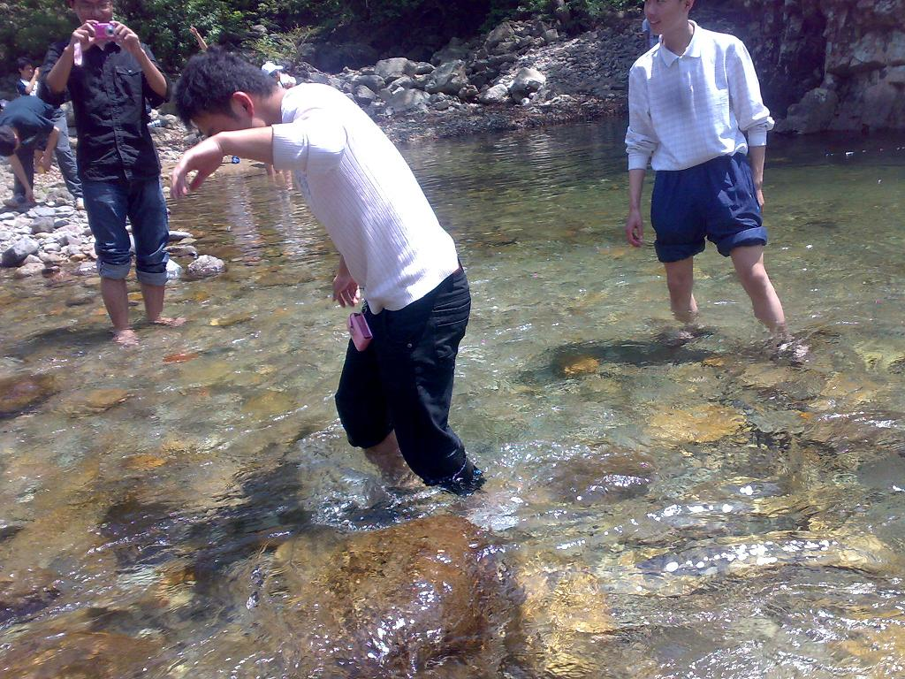

[转寄/推荐][转贴][删除][修改][设置可RE属性][上一篇][返回讨论区][下一篇][回文章][同主题列表][同主题阅读][从这里展开]
发信人: withoutU (风萧萧兮~), 信区: outdoor
标 题: 浙东大峡谷溯溪活动预告帖
发信站: 饮水思源 (2010年09月17日08:20:24 星期五)
小提醒：活动正式召集短信将尽快通过飞信发送至各会员，请“野人”们留意哈~~~另外，
相比溯溪，更建议大一小朋友们走十一的新生线清凉峰哈~~~
【目的地简介】
浙东大峡谷位于宁海附近正式称呼为：宁波天河生态风景区。峡谷发源于天台华顶山
北麓，全长共20公里，垂直落差最高处有900多米，峡谷谷底溪旁怪石堆砌。总长约20公里
。整条峡谷"九曲十八弯"，垂直落差最大的达900多米，故旅游界人士把其命名为"浙东大
三峡"。峡谷谷底溪旁怪石堆砌，最大卵石达百余立方米，重约千余吨。无数卵石犹如从山
顶奔腾而下，姿态各异。峡谷两侧峭壁耸立，气势雄伟。
清水溪，又名逐步溪，长度适中，水深及膝（最深处可能没腰）是一条经典的徒步溯
溪线路。峡谷未做开发，谷底开阔，落差很小，小水潭无数，清可见底。整条溪底好像是
水流在整块大石上冲刷出来一般，岩壁上都是粗犷的条纹，犹如天然岩滑一样。沿途水潭
较多，走走停停，热了就跳 下水游个泳，真是爽快至极...
【活动时间】2010年9月22~23日
【活动性质】难度：★★★★强度：★★ 腐败：★★ 景色：★★★ ★ 趣味：★★★★
【住宿方式】露营
【组织】 领队：金永青 副领队：杨子豪 管龙 压队：陈铭
【活动人数】29人
【活动费用】预收260元 多退少补
车费： 140元
装备费： 50元
腐败费： 30元
保险费： 30元
向导费: 10元
合计： 260元
【谷中一窥】
 screen.width - 200){this.width = screen.width - 200}">
|
[转寄/推荐][转贴][删除][修改][设置可RE属性][上一篇][返回讨论区][下一篇][回文章][同主题列表][同主题阅读][从这里展开]